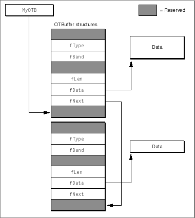

Legacy Document
Important: The information in this document is obsolete and should not be used for new development.
Important: The information in this document is obsolete and should not be used for new development.


No-Copy Receiving
Open Transport allows you to receive data without doing the extra copying that is normally involved in receiving data, which can save time and resources.Normally, when you call one of the receive functions to get data, you pass the address of a buffer you have allocated, and Open Transport copies data from its own internal buffers to the buffer you specify. Doing a no-copy receive means that Open Transport does not copy data from its buffers into yours, but instead allows you to access its internal buffers directly. For example, you might have received some data that needs to be written to disk and you have four files, each with a different buffer, that are expecting data. Normally what you would do is store the data in a temporary buffer while you determined which of the four files was the right destination. When you identified the target, you'd then copy the data from the temporary buffer into that file's buffer.
A no-copy receive allows you to peek at the data when you receive it and write it out immediately. Open Transport does this by giving you access to a special no-copy receive buffer,
OTBuffer. To use this buffer correctly, you must
You need to release the no-copy receive buffer (with the
- not write to it; if you do, you can crash the system
- release it quickly
- only release it once; don't release it multiple times
OTReleaseBufferfunction) as soon as you are finished using it so that you are not tying up system resources required elsewhere. One consequence of holding on to a buffer too long is that your link layer driver starts allocating more buffers as it receives more data and, if it isn't well designed, it may run out of space and lose packets.In many cases, for performance reasons, drivers pass their actual DMA buffers when they return data. If this is the case, when you do a no-copy receive, you are getting the actual DMA buffers from the driver. If you hold on to the buffer for too long, you may begin to starve the driver for DMA buffers, which adversely affects the performance of the system. It is very important that if you are doing a no-copy receive, you hold onto the buffer for as short a time as possible. If it seems necessary to hold on to the buffer for any length of time, overall performance is better if you instead make a copy of the data and return the buffer to the system.
Figure 10-2 shows the structure of Open Transport's internal receive buffers. You will be accessing data referenced in these buffers when you do a no-copy receive. To do this, you allocate a variable that holds the address of the first
- WARNING
- On PPC systems no-copy receives are only supported for PPC Open Transport clients. Emulated 68000 clients may not use no-copy receives on PPC systems.

OTBufferstructure and then access additional buffers using thefNextfield of each buffer.Figure 10-2 OTBuffer structures

In Figure 10-2 the variable
MyOTBholds the address of the firstOTBufferstructure. The unused fields of the structure are shaded. ThefDatafield of the structure points to the first data packet; thefLenfield specifies the length of the data packet, and thefNextfield holds the address of the secondOTBufferstructure, which provides the location and size of the second data packet.The no-copy receive buffer is actually a linked chain of buffers, with the next buffer pointed to by the
fNextfield in each buffer. You can access all of the received data by tracing the chain offNextpointers. For your convenience, Open Transport provides theOTBufferInfostructure and the utility functions,OTReadBufferandOTBufferDataSize, to read through theOTBufferstructure.In order to do a no-copy receive, you must
The following two listings show two different methods of doing nocopy receives. Listing 10-1 shows the
- Allocate a local variable into which Open Transport will store the address of the first
OTBufferstructure. TheOTBufferInfotype is especially useful for this local variable.- Pass the constant
kOTNetbufDataIsOTBufferStarfor thenbytesparameter of theOTRcvfunction or theudata.maxlenfield used with other receive functions to indicate that you are doing a no-copy receive.- Use the utility function
OTBufferDataSizeto determine the size of the no-copy receive buffer.- Use the utility function
OTReadBufferto read bytes from the data buffers. ThefOffsetfield of theOTBufferInfostructure specifies how much of the buffer has been read.- Use the
OTReleaseBufferfunction to return the no-copy receive buffer to the system when you are finished copying data from the buffer.
NoCopyReceiveUsingOTReadBufferuser-defined function.This function reads data from the endpoint (ep) using a no-copy receive. The data is then copied out of theOTBufferchain using theOTReadBufferutility function. This method is useful if you need to look at a small chunk of data, which you can copy usingOTReadBUffer, to decide what to do with the rest.Listing 10-1 Doing a no-copy receive: method 1
enum { kTransferBufferSize = 1024 }; static char gTransferBuffer[kTransferBufferSize]; static OSStatus NoCopyReceiveUsingOTReadBuffer(EndpointRef ep, SInt16 destFileRefNum) { OSStatus err; OTResult result; OTBufferInfo bufferInfo; OTFlags junkFlags; UInt32 bytesRemaining; UInt32 bytesThisTime; SInt32 count; err = noErr; /* Initialise the bufferInfo data structure. */ bufferInfo.fOffset = 0; bufferInfo.fBuffer = nil; /* Read the data. Use the constant kOTNetbufDataIsOTBufferStar */ /* to indicate that you want to do a no-copy receive. */ result = OTRcv(ep, &bufferInfo.fBuffer, kOTNetbufDataIsOTBufferStar, &junkFlags); if (result >= 0) { /* Use OTBufferDataSize to calculate how much data is returned */ bytesRemaining = OTBufferDataSize(bufferInfo.fBuffer); /* Write that data to the file. We do this in chunks, */ /* copying each chunk of data out of the OTBuffer chain */ /* and into our transfer buffer using OTReadBuffer, then */ /* writing each chunk of data, until there is no /* more data left in the buffer chain. */ while (err == noErr && bytesRemaining > 0) { if (bytesRemaining > kTransferBufferSize) { bytesThisTime = kTransferBufferSize; } else { bytesThisTime = bytesRemaining; } (void) OTReadBuffer(&bufferInfo, gTransferBuffer, &bytesThisTime); count = bytesThisTime; err = FSWrite(destFileRefNum, &count, gTransferBuffer); bytesRemaining -= bytesThisTime; } err = noErr; } else { err = result; } /* Clean up. We MUST release the OTBuffer chain back to OT */ /* so that it can reuse it. OTReleaseBuffer does not tolerate */ /* the parameter being nil, so we check for that case first. */ if (bufferInfo.fBuffer != nil) { OTReleaseBuffer(bufferInfo.fBuffer); } return err; }The method shown in the previous listing is not particularly efficient, but it does demonstrate the use of theOTReadBufferfunction. The second method, shown in Listing 10-2, uses theNoCopyReceiveWalkingBufferChainuser-defined function to read data from the endpoint (ep) using a no-copy receive. The code walks through the resulting buffer chain, writing out chunks of data directly to the file from the buffers returned to us by Open Transport.Listing 10-2 Doing a no-copy receive: method 2
static OSStatus NoCopyReceiveWalkingBufferChain(EndpointRef ep, SInt16 destFileRefNum) { OSStatus err; OTResult result; OTBufferInfo bufferInfo; OTBuffer *thisBuffer; OTFlags junkFlags; SInt32 count; err = noErr; /* Initialise the bufferInfo data structure. */ bufferInfo.fOffset = 0; bufferInfo.fBuffer = nil; /* Read the data. Use the constant kOTNetbufDataIsOTBufferStar */ /* to indicate that you want to do a no-copy receive. */ result = OTRcv(ep, &bufferInfo.fBuffer, kOTNetbufDataIsOTBufferStar, &junkFlags); if (result >= 0) { /* Walk the returned buffer chain, writing out each chunk to file */ thisBuffer = bufferInfo.fBuffer; while (err == noErr && thisBuffer != nil) { count = thisBuffer->fLen; err = FSWrite(destFileRefNum, &count, thisBuffer->fData); thisBuffer = thisBuffer->fNext; } } else { err = result; } /* Clean up. We MUST release the OTBuffer chain to Open Transport */ /* so that it can reuse it., OTReleaseBuffer does not tolerate */ /* the parameter being nil, so we check for that case first. */ if (bufferInfo.fBuffer != nil) { OTReleaseBuffer(bufferInfo.fBuffer); } return err; }